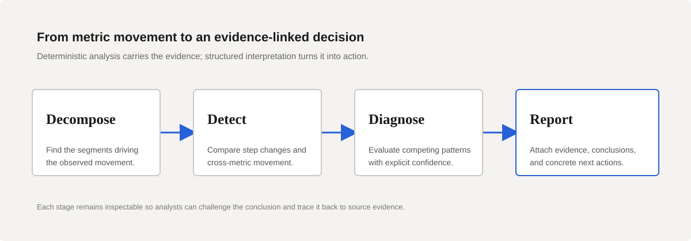
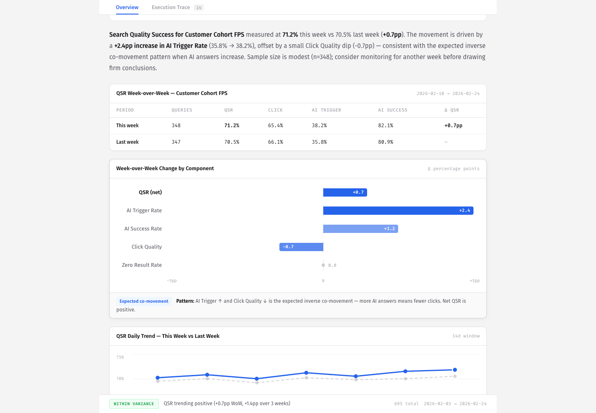

Question
Search quality shifts rarely have one obvious cause. The evidence sits across segments, metrics, ranking behavior, and product context. How does an analyst move from "the metric moved" to a ranked set of hypotheses — without losing the evidence along the way?
Approach
I have built this system twice. The first version is Atlassian's in-house Search Metric Analysis Agent, which raised investigation throughput 2.5×. Search Metric Analyzer is the second: rebuilt independently, in the open, so the full system can be inspected — deterministic analysis where correctness matters, specialist agents where interpretation helps, and a product surface that keeps evidence attached to conclusions.
- Decompose — isolate which segments drove the movement.
- Detect — compare step changes and co-movement across metrics.
- Diagnose — evaluate competing patterns with explicit confidence.
- Report — produce a structured investigation with next actions.

Evidence

